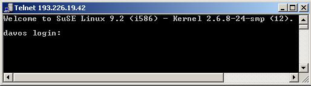
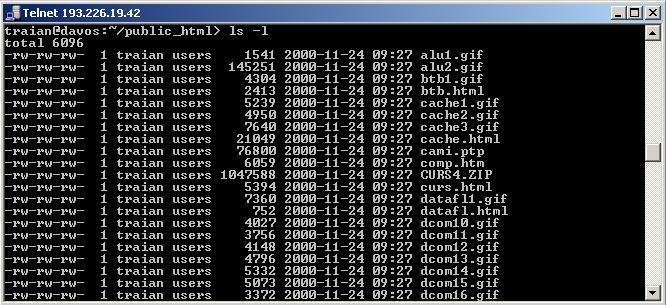
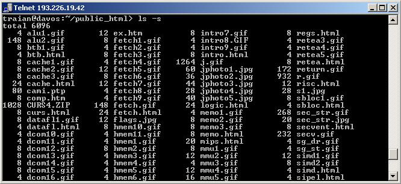
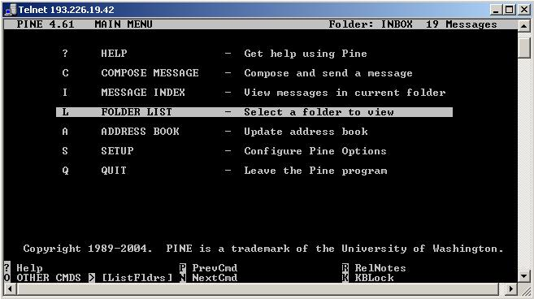

Sistemul de operare UNIX A fost initiat de Dennis Ritchie
si Brian W. Karnighan fiind special dezvoltat pentru profesionisti.
UNIX-ul este un sistem de operare :
- portabil
- modular
- multiuser (se pot conecta simultan mai multi utilizatori)
- multitasking (se poat rula mai multe programe in paralel)

2.Logarea-Conectarea la un sistem UNIX
2.1 Intrarea in sistem
Conectarea la un sistem UNIX (logarea) se face pe baza unui nume de utilizator protejat
de o parola. Numele de utilizator este un cuvant -de obicei de 8 litere- cu care sistemul
identifica utilizatorii. Parola protejeaza numele de utilizator (putem intra numai cu parola
potrivita). Utilizatorii sunt grupati de catre administratorul de sistem, astfel fiecare
utilizator poate apartine unuia sau mai multor grupuri in vederea stabilirii drepturilor de acces.
Dupa operatia de logare sistemul de operare UNIX permite accesul in
sistem.
Iesirea din sistem se face cu comanda exit, cu apasarea simultana a tastelor
Ctrl si D, sau cu comanda logout.
2.2 Comenzile shell UNIX
Shell-ul UNIX-ului este un program interactiv, ce permite utilizatorului
lansarea si executia de comenzi.
Shell-ul afiseaza un prompt (de obicei $), dupa care acesta
asteapta comenzi de la utilizator. Tastarea unei comenzi se termina cu /Enter/ . Sistemul UNIX
face diferenta intre literele mari si mici. Majoritatea comenzilor shell trebuiesc scrise cu
litere mici.
2.2.1 Intreruperea executiei comenzilor
Intreruperea executiei comenzilor se face apasarea concomitenta a Ctrl-C. Combinatia Ctrl-D
intrerupe transmisia de date.
2.2.2 Comanda man
In sistemele UNIX o descriere detailata a comenzilor se obtine
prin comanda man (manual). La comanda man urmata de numele unei anumite comenzi se
afiseaza un help de utilizare a comenzii respective, afisarea facandu-se pagina cu
pagina la apasarea tastei Space sau linie cu linie la apasarea tastei Enter.
Abandonarea (iesirea din man) se face cu tasta q.
3.Utilizarea fisierelor
3.1. Fisierele UNIX
Sistemul de operare UNIX se refera la fisiere prin numele acestora.
Numele fisirelor se poate alege liber in afara a catorva restrictii.
In sistemele UNIX spatiul eliberat prin stergerea fisierelor poate
fi instantaneu ocupat de catre sistem, astfel nu este posibila recuperarea fisierelor sterse.
Stergerea in UNIX este DEFINITIVA !
3.1.1 Tipuri de fisiere
In UNIX exista 3 tipuri de fisiere:
- fisiere obisnuite (pot contine text, date sau chiar programe executabile)
- fisiere speciale (contin informatii pentru sistem)
- fisiere directoare (ajuta la organizarea fisierelor)
3.1.2. Crearea fisierelor
Cel mai simplu mod de a creea fisiere: cu ajutorul comenzii cat.
Astfel comanda :
cat>exemplu<<"STOP"
citeste de la tastatura si scrie in fisier textul pana la primul
rand "STOP". Ultimul rand ("STOP") nu va fi inscris in fisier .
3.2. Listare fisierelor
Listarea fisierelor se executa in urma lansarii comenzii ls.
Formatul listei obtinute se poate modifica utilizand urmatoarele
swich-uri:
-l: aflam drepturile de acces ale fisierului, numarul relatiilor referitoare
la el, numele si grupul proprietarului, dimensiunea, data ultimei modificari,
iar in sfarsit numele fisierului

-s: lista va cuprinde numele fisierelor si dimensiunea lor in blocuri de disc

-a: ne sunt afisate toate fisierele din directorul respectiv, inclusiv cele
ascunse, cele care incep cu punct (.)
-F: se afiseaza si tipul fisierelor. Caracterul / stand dupa nume specifica
un director iar fisierul dupa al carui nume este * e program executabil
3.3. Afisarea continutului unui fisier
Pentru afisarea continutului unui fisier putem folosi procesoare
de text (vi, joe), dar de multe ori este mai simpla si eficienta folosirea comenzilor
cat, pg si more.
3.3.1. Comanda cat
Cu ajutorul comenzii cat putem afisa continutul fisierelor mai mici.
Ca parametru trebuie specificat numele fisierului. Fisierele date ca parametru sunt afisate concat.
3.3.2. Afisarea fisierelor mai mari
Se folosesc comenzile pg si more, aceste programe afisand fisierul
formatat pe ecran, fiind posibila navigarea prin text.
3.3.3. Procesoare de texte
Sistemele UNIX dispun de mai multe editoare. Cele mai cunoscute sunt
vi, emacs si joe.
Editorul vi este editorul de baza al UNIX-ului dar datorita utilizarii
greoaie nu este prea adorata de utilizatori.
Editorul joe este mult mai usor de utilizat, deoarece editarea se face in
mod direct. Deplasarea in fisier se face cu tastele cursor, pgdn, pgup etc.
Facilitatile editorului pot fi afisate tastand combinatia Ctrl-K-H.
3.4. Copierea, redenumirea si stergerea fisierelor
3.4.1. Copierea fisierelor
Pentru realizarea unei copii a unui fisier putem folosi comanda cp.
De ex comanda:
$ cp fisier copie
creaza o copie a fisierului fisier cu numele copie.
Se pot folosi si nume generice *. De ex. in urma comenzii:
$ cp * nou
se copiaza toate fisierele din directorul curent in directorul nou,
exceptie facand fisierele ascunse (cele care incep cu punct).
3.4.2. Redenumirea fisierelor
Pentru redenumirea fisierelor se foloseste comanda mv. De ex.
in urma lansarii comenzii:
$ mv nume_fis nume_nou
fisierul nume_fis va deveni fisierul nume_nou daca nu a existat
directorul nume_nou, sau va deveni fisierul nume_nou/nume_fis in celalalt caz.
3.4.3. Stergerea fisierelor
Comanda rm este folosita la stergerea fisierelor
Ex rm nume_fis
sterge fisierul nume_fis.
Se poate folosi swich-ul -i pentru a genera o intrebare de
confirmare a stergerii.
Atentie! In UNIX stergerea este definitiva.
3.5 Directoare
3.5.1. Utilizarea structurii de directoare
Trecerea de pe un director pe altul se face cu comanda cd astfel:
$ cd nume_subdirector
schimba subdirectorul curent in subdirectorul cu numele de nume_subdirector.
Trecerea pe un director superior se face cu comanda:
$ cd ..
3.5.2. Crearea si stergerea directoarelor
Crearea directoarelor se face cu comanda mkdir, astfel comanda:
$ mkdir nume_director
creeaza un director cu numele de nume_director.
Stergerea se face cu comanda rmdir:
$ rmdir nume_director
3.5.3. Cautarea unui fisier in structura de directoare
Comanda de cautare multilaterala : find
Comanda "find" are urmatoarea sintaxa:
$ find director_de_pornire -name nume_fisier -comanda
De ex.
$ find . -name test.ufo -print
afiseaza toate fisierele cu numele de test.ufo incepand din
directorul curent in jos.
3.6. Drepturi de acces
In UNIX fiecare fisier are un cod de acces care contine drepturile
fiecarui utilizator de acces asupra fisierului.
Acest cod poate fi setat cu comanda chmod.
Codul este descompus in 3 parti: partea referitoare la utilizator,
la grupul de care apartine si la toti utilizatorii. Fiecare cod este de fapt un numar
reprezentat pe3 biti, cu urmatoarea semnificatie:
- 1 (executabil)
- 2 (scriere)
- 4 (citire)
De ex. in urma comenzii
$ chmod 751 director(fisier)
utilizatorul are toate drepturile de acces la director(fisier),
grupul numai de citire si executare (5=1+4), iar ceilalti utilizatori numai de executare (1).
4. Programe de comunicatie
4.1. Relatia de dialog
4.1.1. Comanda write
Cu ajutorul comenzii write putem trimite un text unui utilizator intrat pe
un sistem. Formatul general al comenzii :
$ write nume_utilizator /Enter/ rand_1 /Enter/ ... rand_n /Enter/ Ctrl-D
De ex.
$ write nume@felix.uttgm.ro
trimite text la adresa sus amintita.
4.1.2. Comanda talk
Comanda talk este un program de dialog. Ex:
$ talk nume_utilizator
utilizatorul primeste un mesaj la care poate sa raspunda cu:
$ talk nume_celalalt
unde nume_celalalt este numele utilizatorului care l-a chemat.
Programul intermediaza dialogul prin impartirea ecranului in 2 parti.
4.1.3. Comanda mesg
Pentru blocarea mesajalor trimise pentru noi cu talk sau write,
folosim comanda
$ mesg n
Validarea mesajelor, se face face cu comanda
$ mesg y
4.2. Posta electronica (programul pine)
Gestiunea cutiei postale electronice o putem face cu ajutorul
programului pine.
$ pine

4.3. Utilizarea retelei
4 .3.1. Comanda telnet
Cu jutorul comenzii telnet se poate intra interactiv pe o alta
masina. De ex.
$ telnet felix.uttgm.ro
se intra pe serverul felix.uttgm.ro, iar
$ telnet 193.6.30.1.
se intra pe masina cu I.P: 193.6.30.1.
Comanda ftp
Cu ajutorul comenzii ftp se pot transmite date intre 2 masini in TCP/IP File
Transfer Protocol (FTP). Formatul comenzii este:
$ ftp nume_masina
4.3.3. Comanda finger
Comanda finger afiseaza informatii despre utilizatorii unui server.
$ finger nume_utilizator@nume_masina
Numele utilizatorului nu este ubligatoriu. De ex.
$ finger @davos.uttgm.ro
afiseaza utilizatorii intrati interactiv pe acest server.
$ finger traian@davos.uttgm.ro da informatii despre utilizatorul
traian de pe serverul davos.uttgm.ro .